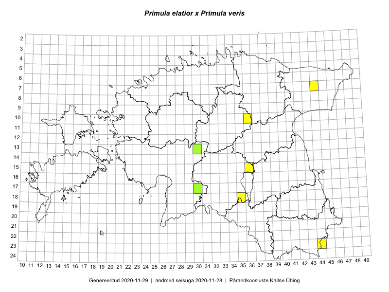

Primula elatior x Primula veris
Uuendatud: 2016-12-02
Kaardile koondatud taksonid: Primula elatior x Primula veris

Kaart põhineb 5 vaatlusel. Taksonit on leitud 5 ruudust.
Viited andmebaasikirjetele